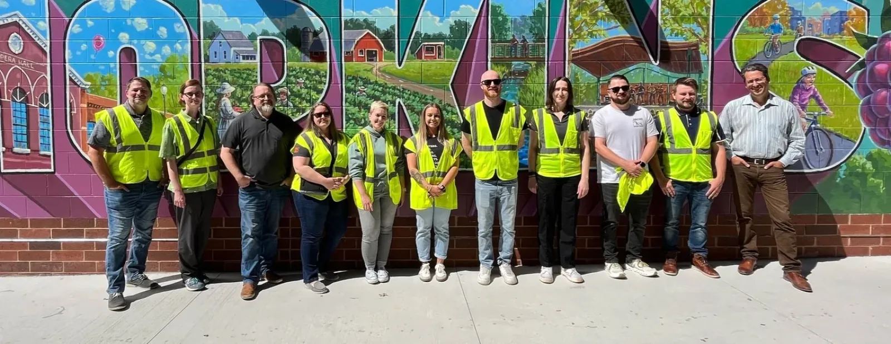
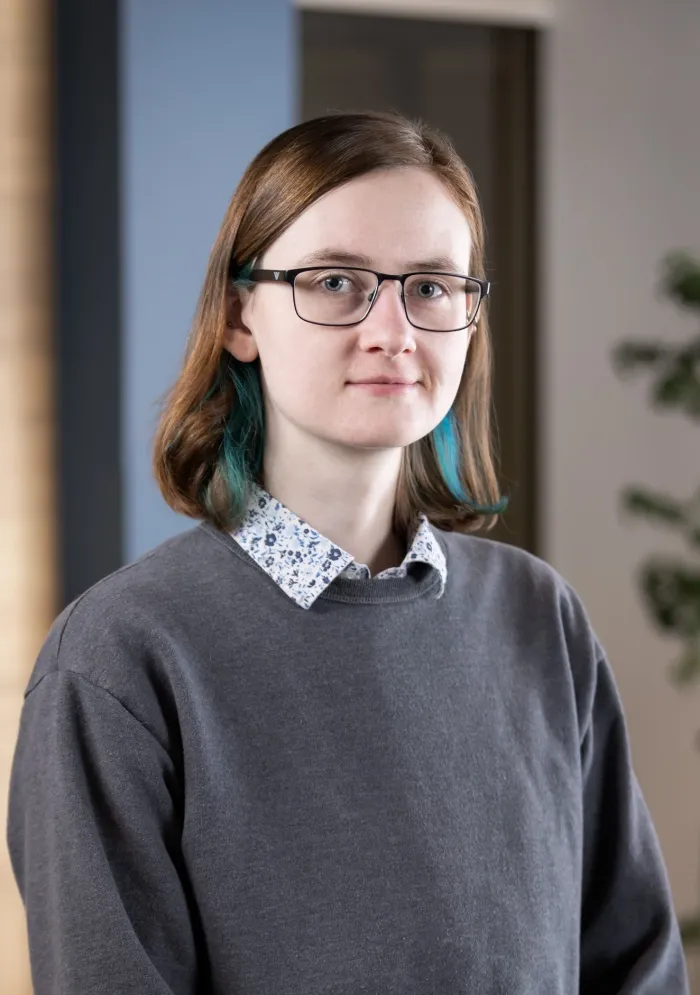
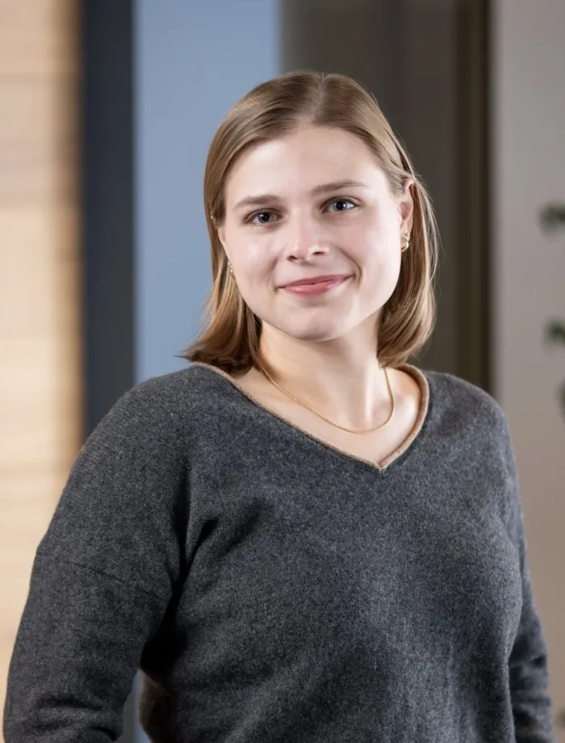
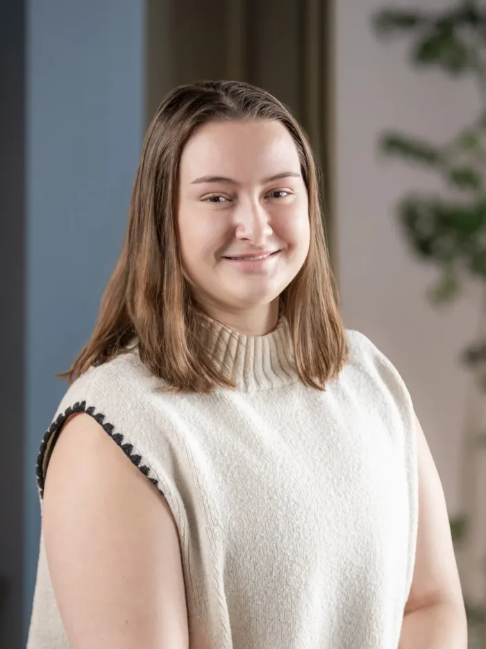
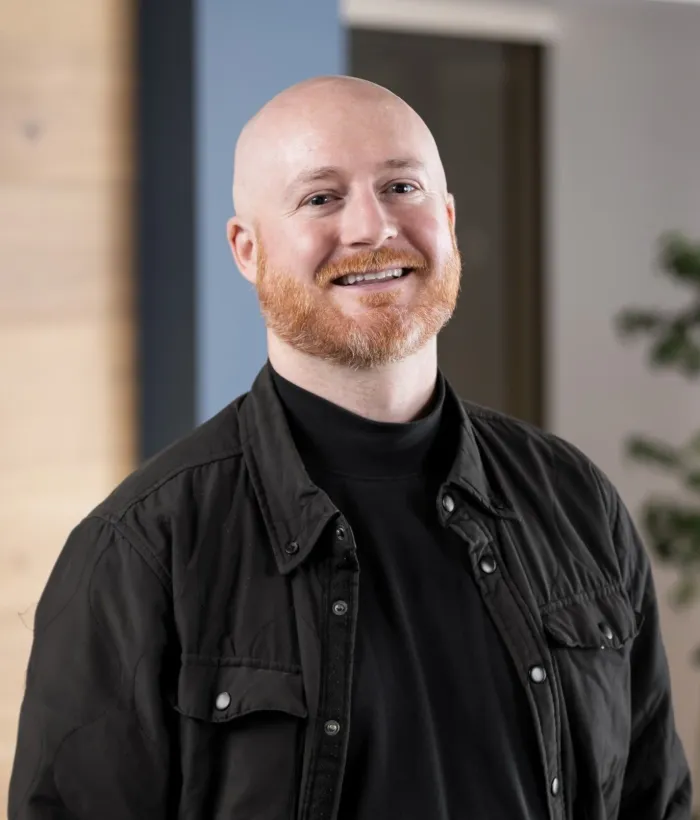
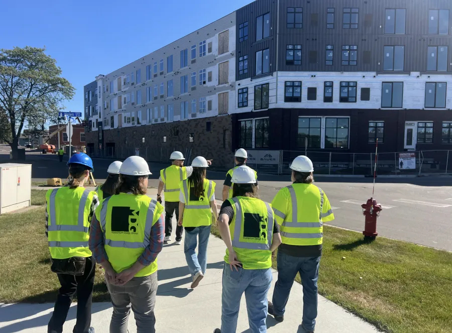
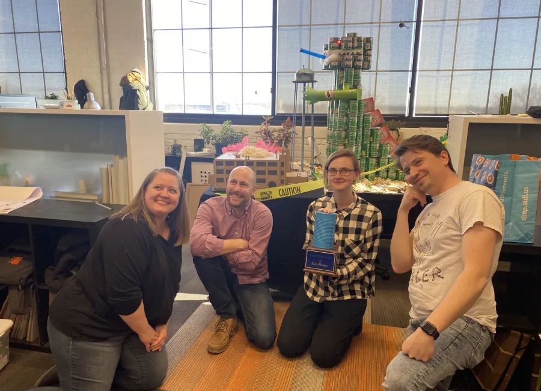
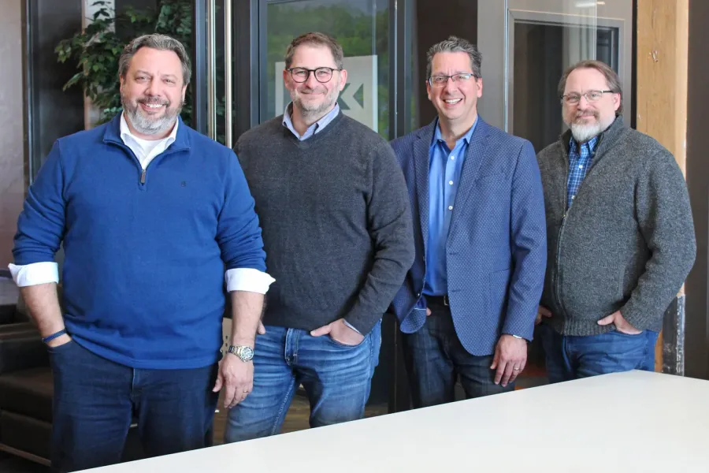
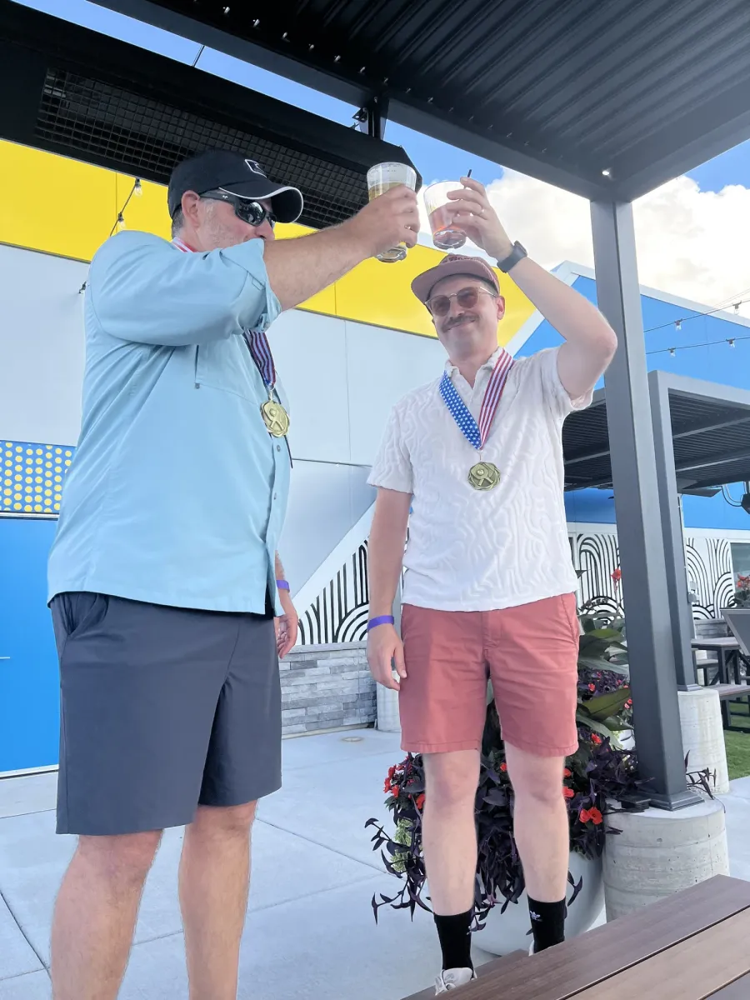

Dare us. We love a challenge!
Together, we transform ideas into reality—with every detail carefully considered and every challenge embraced as an opportunity for innovation. We believe that the best results are built on open, proactive communication and close collaboration, and we prove again and again that thoughtful, creative design delivers great results for any type of project.
We're ambitious, dedicated, and driven—fueled by a pinch of stubbornness that keeps us pushing boundaries, breaking new ground, and never settling for "good enough."

Our team
-
Alex Krug
Project Manager / Architect
-

Augustina Teuber
Senior Designer
-
Brian Gadient
Principal
-
Craig Hartman
Principal
-
Jesse Hamer
Principal
-
Jesse Harriss
Project Manager
-
Lauren Reiner
Designer
-

Liz Dewald
Senior Designer
-

Mackenzie Schmidt
Designer
-
Megan Schires
Project Manager / Architect
-
Mitch Bezier
Project Manager / Architect
-

Nick Hennen
Senior Designer
-
Sarah Hamer
Office Manager
-
Sydney Kroger
Interior Designer
Our team in action.
As a firm, we are committed to fostering professional growth, encouraging meaningful community engagement, and cultivating strong, respectful relationships with everyone on the team. And we have a ton of fun along the way!

Site Visits

Food-struction!

MDG in the News

Pickleball Tournament